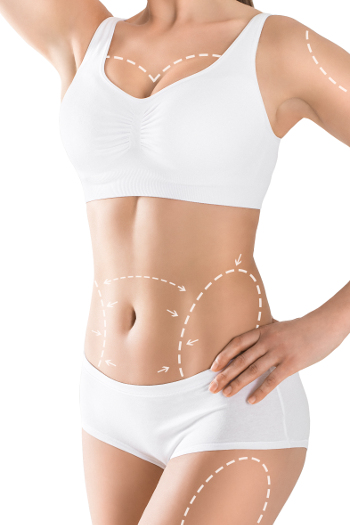

Lipoescultura
Liposucción o LipoaspiraciónQué es la lipoescultura o lipoaspiración?
La lipoescultura o liposucción es un procedimiento utilizado, tanto en mujeres como en hombres, para eliminar las áreas localizadas de grasa del cuerpo mediante la succión a través de una delgada cánula.
El arte de la Lipoescultura radica en cuanto sacar y de que lugares retirar el tejido graso sobrante. Al decir de Miguel Ángel; "Vi el ángel en el mármol y tallé hasta que lo puse en libertad".
Cuando es el momento ideal para realizarse una lipoescultura?
Tal como comentamos en el capítulo de estética del contorno corporal, esta técnica no debería considerarse para adelgazar sino para remodelar. Si la persona presenta marcado sobrepeso y no ha comenzado un plan de adelgazamiento, el cirujano no debería acceder a realizar una liposucción ya que la misma no genera resultados óptimos y la persona siempre recupera el volumen extraído. Por ello, para realizar esta técnica de forma eficiente y duradera, debería ser realizada luego que el paciente esté próximo a su peso ideal.
La liposucción es una técnica que retira el depósito de tejido adiposo que naturalmente no ha logrado la alimentación balanceada y el ejercicio. Este concepto es clave, ya que el adelgazamiento natural tiende a que los tejidos se acomoden de manera más natural. La liposucción entonces busca solo retirar los depósitos grasos que los métodos naturales no logran, buscando refinar el contorno corporal, restablecer las curvas y la armonía corporal dando una apariencia delgada y equilibrada.
Cuáles son los lugares más frecuentes que requieren lipoescultura?
Esta técnica la realizamos tanto en mujeres como en hombres, en quienes los depósitos grasos pueden localizarse en diferentes lugares por lo que las estrategias son diferentes.
Las áreas problemáticas mas frecuentes en la mujer son los flancos, el sector bajo del abdomen, los glúteos, la entrepierna, los pantalones de montar o las rodillas.
Las áreas problemáticas más frecuentes en el hombre son los flancos, el abdomen y menos frecuentemente los pectorales y las zonas glúteas.
En ambos sexos, la cara y el cuello también son áreas frecuentes de depósitos adiposos que pueden ser tratados mediante lipoaspiración.
Cuando está indicada y cuando no?
En pacientes que han bajado de peso y están próximos a su peso proyectado, con depósitos adiposos localizados, con buena calidad de tejidos, sin flaccidez, la técnica de liposucción tiene especial indicación por sí sola.
En pacientes con flaccidez, laxitud y piel sobrante, con algún depósito de tejido adiposo remanente, la liposucción sola no logra buenos resultados. En estos casos la cirugía del contorno corporal es el procedimiento de elección y la lipoaspiración se puede realizar como complemento de la misma. En estos casos de personas con flaccidez, la lipoaspiración por sí sola no solo no mejora la flaccidez, sino que la puede empeorar.
Lipoaspiración convencional, laser o ultrasonido?
Nosotros realizamos la liposucción convencional ya que estamos convencidos que las técnicas con ultrasonido o laser no aportan mejoras significativas y solo encarecen y complejizan el procedimiento, obteniendo resultados casi idénticos. Como en todas las técnicas médicas, si hubiese una que sobresaliese notablemente en sus resultados por sobre todas las demás, se volvería inmediatamente el standard de todos los cirujanos y eso no es así hasta el momento.
Características del procedimiento
Realizamos este procedimiento en sala de cirugía buscando las mayores condiciones de asepsia, en el contexto de un centro con todos los elementos de bioseguridad.
No somos partidarios de realizar este procedimiento en consultorios convencionales.
El tipo de anestesia está relacionado fundamentalmente con la extensión de los depósitos de tejido adiposo. En caso que el paciente presente adiposidades localizadas pequeñas y poco extensas, el procedimiento se puede realizar bajo anestesia local con o sin sedación. En caso que las aéreas sean más extensas o que requiera otro procedimiento quirúrgico para mejorar el contorno corporal como la abdminoplastia, se requiere la participación de un anestesista para realizar anestesia raquídea o una anestesia general. Igualmente se realiza en todos los casos anestesia local intumescente en las áreas a lipoaspirar, para facilitar la aspiración del tejido adiposo y disminuir el sangrado o acumulación de líquidos.
Cabe destacar que, solamente para ofrecer la mayor seguridad al paciente, nuestra regla es realizar procedimientos que no sean demasiado prolongados ni cirugías muy extensas. Si existen muchas áreas a tratar es preferible realizar procedimientos de corta duración y separados en el tiempo con lo cual se logra mejor recuperación, resultados mas óptimos y menos complicaciones. En cambio, realizar un solo procedimiento de muy larga duración, que busque solucionar defectos extensos, en el mismo procedimiento, el paciente puede sufrir más dolor, aumento del tiempo de recuperación, aumenta las complicaciones y genera resultados menos óptimos.
Habitualmente se trata de una cirugía ambulatoria
La técnica se realiza mediante la inserción de una cánula a través de pequeñas incisiones ocultas, para succionar la grasa de forma cuidadosa y criteriosa, de tal forma que se retira mayor cantidad en los depósitos más profundos de tejido adiposo y menos cantidad con una cánula más fina en la superficie, para evitar irregularidades superficiales.
Postoperatorio y recuperación
En el postoperatorio es importante realizar reposo por 2 semanas con mínimo movimiento. Es fundamental el uso de fajas y prendas compresivas o vendas elásticas para que la piel se adapte al área lipoaspirada. La vuelta al trabajo no debe ser antes de esas 2 semanas y en algunos casos puede requerir un poco más de reposo, según la persona. El ejercicio intenso se recomienda reanudar por lo menos luego de un mes según la extensión del procedimiento y su evolución.
Las molestias, el edema y los moretones en las áreas lipoaspiradas son habituales y los resultados son evidentes luego de algunas semanas cuando el edema se reabsorbe y los tejidos se remodelan.
Al igual que el resto de los procedimientos de armonización del contorno corporal, los resultados son duraderos si los pacientes mantienen una alimentación saludable, ejercicios regulares y un metabolismo equilibrado, evitando a toda costa ganar peso.
Liposucción o Lipoescultura
Tratamiento de adiposidades localizadas, pantalón de montar, abdomen, flotadores o rodillas
Ver Video